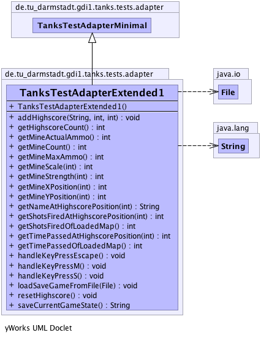

de.tu_darmstadt.gdi1.tanks.tests.adapter
Class TanksTestAdapterExtended1
java.lang.Object
 de.tu_darmstadt.gdi1.tanks.tests.adapter.TanksTestAdapterMinimal
de.tu_darmstadt.gdi1.tanks.tests.adapter.TanksTestAdapterExtended1
de.tu_darmstadt.gdi1.tanks.tests.adapter.TanksTestAdapterMinimal
de.tu_darmstadt.gdi1.tanks.tests.adapter.TanksTestAdapterExtended1
- Direct Known Subclasses:
- TanksTestAdapterExtended2
public class TanksTestAdapterExtended1
- extends TanksTestAdapterMinimal
-
-

|
Method Summary |
void |
addHighscore(java.lang.String name,
int shotsFired,
int timePassed)
Adds a highscore entry to highscores with the passed values for name, shots fired and passed time. |
int |
getHighscoreCount()
Returns the amount of highscore entries currently stored. |
int |
getMineActualAmmo()
Panzer haben nur begrenzt viele Minen, die auf der Karte plaziert werden koennen. |
int |
getMineCount()
|
int |
getMineMaxAmmo()
Panzer haben nur begrenzt viele Minen, die auf der Karte plaziert werden koennen. |
int |
getMineScale(int position)
Mine ist die Bezeichnung eine zerstoerbare Mine mit einem Mittelpunkt (x|y) und
einer Skalierung. |
int |
getMineStrength(int position)
Returns the strength value of the mine at the passed position. |
int |
getMineXPosition(int position)
Mine ist die Bezeichnung eine zerstoerbare Mine mit einem Mittelpunkt (x|y) und
einer Skalierung. |
int |
getMineYPosition(int position)
Mine ist die Bezeichnung eine zerstoerbare Mine mit einem Mittelpunkt (x|y) und
einer Skalierung. |
java.lang.String |
getNameAtHighscorePosition(int position)
Returns the player name of the highscore entry at the passed position. |
int |
getShotsFiredAtHighscorePosition(int position)
Returns the amount of shots fired of the highscore entry a the passed position
The best highscore should be at position 0. |
int |
getShotsFiredOfLoadedMap()
Returns the amount of shots fired by the player of the currently loaded savegame. |
int |
getTimePassedAtHighscorePosition(int position)
Returns the amount of time passed of the highscore entry a the passed position
The best highscore should be at position 0. |
int |
getTimePassedOfLoadedMap()
Return the time passed of the currently loaded savegame. |
void |
handleKeyPressEscape()
This Method should emulate the pressing of the escape key. |
void |
handleKeyPressM()
This Method should emulate the pressing of the m key. |
void |
handleKeyPressS()
This Method should emulate the pressing of the key s. |
void |
loadSaveGameFromFile(java.io.File file)
Laed eine gespeicherte Karte von einem File. |
void |
resetHighscore()
Resets the highscores. |
java.lang.String |
saveCurrentGameState()
Saves the current state of the game. |
| Methods inherited from class de.tu_darmstadt.gdi1.tanks.tests.adapter.TanksTestAdapterMinimal |
getBorderCount, getBorderXPosition, getBorderXSize, getBorderYPosition, getBorderYSize, getExplosionCount, getExplosionHeight, getExplosionSpeed, getExplosionWidth, getExplosionXPosition, getExplosionYPosition, getMapBackgroundTexture, getMapElapsedTime, getMapFiredShots, getMapMaxDuration, getMapName, getMapNextMap, getShotCount, getShotRotation, getShotScale, getShotStrength, getShotXPosition, getShotYPosition, getStateBasedGame, getStringRepresentationOfMap, getTankActualLife, getTankActualMine, getTankActualShot, getTankCount, getTankMaxLife, getTankMaxMine, getTankMaxShot, getTankName, getTankRotation, getTankScale, getTankSpeed, getTankStrength, getTankXPosition, getTankYPosition, getWallActualLife, getWallCount, getWallMaxLife, getWallRotation, getWallScale, getWallXPosition, getWallYPosition, handleKeyDown, handleKeyDownDownArrow, handleKeyDownLeftArrow, handleKeyDownRightArrow, handleKeyDownUpArrow, handleKeyPressed, handleKeyPressK, handleKeyPressN, initializeGame, isCorrectMap, loadMapFromFile, loadMapFromFileWithExceptions, runGame, stopGame |
| Methods inherited from class java.lang.Object |
clone, equals, finalize, getClass, hashCode, notify, notifyAll, toString, wait, wait, wait |
TanksTestAdapterExtended1
public TanksTestAdapterExtended1()
- Use this constructor to set up everything you need.
addHighscore
public void addHighscore(java.lang.String name,
int shotsFired,
int timePassed)
- Adds a highscore entry to highscores with the passed values for name, shots fired and passed time.
- Parameters:
name - name of the player that scored the highscoreshotsFired - amount of shots fired by the playertimePassed - time passed in seconds
resetHighscore
public void resetHighscore()
- Resets the highscores. Alle entries are deleted and @see
getHighscoreCount() should return 0.
getNameAtHighscorePosition
public java.lang.String getNameAtHighscorePosition(int position)
- Returns the player name of the highscore entry at the passed position.
The best highscore should be at position 0.
See the specification in the task assignment for the definition of best highscore.
Positions that are invalid should return null.
- Parameters:
position - position of the highscore entry
- Returns:
- playername of the highscore entry at the passed position or null if position is invalid
getShotsFiredAtHighscorePosition
public int getShotsFiredAtHighscorePosition(int position)
- Returns the amount of shots fired of the highscore entry a the passed position
The best highscore should be at position 0.
See the specification in the task assignment for the definition of best highscore.
Positions that are invalid should return null.
- Parameters:
position - position of the highscore entry
- Returns:
- amount of shots fired of the highscore entry at the passed position or null if position is invalid
getTimePassedAtHighscorePosition
public int getTimePassedAtHighscorePosition(int position)
- Returns the amount of time passed of the highscore entry a the passed position
The best highscore should be at position 0.
See the specification in the task assignment for the definition of best highscore.
Positions that are invalid should return null.
- Parameters:
position - position of the highscore entry
- Returns:
- amount of time passed of the highscore entry at the passed position or null if position is invalid
getHighscoreCount
public int getHighscoreCount()
- Returns the amount of highscore entries currently stored.
- Returns:
- amount of highscore entries
getMineStrength
public int getMineStrength(int position)
- Returns the strength value of the mine at the passed position.
It is important that the mines are stored in the same order as they are parsed from the map file.
The first mine parsed should be at position 0.
If the position is invalid return -1.
- Parameters:
position - position of the mine
- Returns:
- strength value of the mine at the passed position
getMineScale
public int getMineScale(int position)
- Mine ist die Bezeichnung eine zerstoerbare Mine mit einem Mittelpunkt (x|y) und
einer Skalierung. Minen muessen in der gleichen Reihenfolge gespeichert werden,
wie in der eingelesen Karte gespeichert. Die erste Mine ist an der Position 0.
- Parameters:
position - : Minen-Nummer
- Returns:
- Skalierung der Mine mit der uebergebenen Minen-Nummer, wenn die Nummer
ungegueltig ist, dann wird -1 zurueckgegeben.
getMineXPosition
public int getMineXPosition(int position)
- Mine ist die Bezeichnung eine zerstoerbare Mine mit einem Mittelpunkt (x|y) und
einer Skalierung. Minen muessen in der gleichen Reihenfolge gespeichert werden,
wie in der eingelesen Karte gespeichert. Die erste Mine ist an der Position 0.
- Parameters:
position - : Minen-Nummer
- Returns:
- Aktuelle x-Koordinate der Mine mit der uebergebenen Minen-Nummer, wenn die Nummer
ungegueltig ist, dann wird -1 zurueckgegeben.
getMineYPosition
public int getMineYPosition(int position)
- Mine ist die Bezeichnung eine zerstoerbare Mine mit einem Mittelpunkt (x|y) und
einer Skalierung. Minen muessen in der gleichen Reihenfolge gespeichert werden,
wie in der eingelesen Karte gespeichert. Die erste Mine ist an der Position 0.
- Parameters:
position - : Minen-Nummer
- Returns:
- Aktuelle y-Koordinate der Mine mit der uebergebenen Minen-Nummer, wenn die Nummer
ungegueltig ist, dann wird -1 zurueckgegeben.
getMineCount
public int getMineCount()
- Returns:
- Aktuelle Anzahl an Minen im laufenden Spiel
getMineMaxAmmo
public int getMineMaxAmmo()
- Panzer haben nur begrenzt viele Minen, die auf der Karte plaziert werden koennen.
Diese Methode liefert die maximal moegliche Anzahl an Minen zurueck.
- Returns:
- Maximale Minenanzahl des Panzers
getMineActualAmmo
public int getMineActualAmmo()
- Panzer haben nur begrenzt viele Minen, die auf der Karte plaziert werden koennen.
Diese Methode liefert die aktuell verfuegbare Anzahl an Minen zurueck.
- Returns:
- Aktuelle Minenanzahl des Panzers
handleKeyPressM
public void handleKeyPressM()
- This Method should emulate the pressing of the m key.
This should plant a mine.
Diese Methode emuliert das Druecken der m-Taste und sollte
die Plazierung einer Mine ausloesen.
handleKeyPressEscape
public void handleKeyPressEscape()
- This Method should emulate the pressing of the escape key.
This is needed for transitions between the menu und the gameplay window
Diese Methode emuliert das Druecken der Escape-Taste und wird fuer
die Transitionen zwischen Menue und Spielfenster verwendet
handleKeyPressS
public void handleKeyPressS()
- This Method should emulate the pressing of the key s.
This should save the game.
Diese Methode emuliert das Druecken der s-Taste und sollte
das Speichern der aktuellen Karte hervorrufen.
loadSaveGameFromFile
public void loadSaveGameFromFile(java.io.File file)
- Laed eine gespeicherte Karte von einem File.
Loads a map with gameplay infos into the game.
saveCurrentGameState
public java.lang.String saveCurrentGameState()
- Saves the current state of the game.
This method should return the string that would be saved into a .tanks savegame file.
For further informations regarding the savegame format see the specification in the task assignment.
- Returns:
- string representation of the current gamestate
getTimePassedOfLoadedMap
public int getTimePassedOfLoadedMap()
- Return the time passed of the currently loaded savegame.
- Returns:
- time passed of the currently loaded savegame
getShotsFiredOfLoadedMap
public int getShotsFiredOfLoadedMap()
- Returns the amount of shots fired by the player of the currently loaded savegame.
- Returns:
- amount of shots fired by the player of the currently loaded savegame